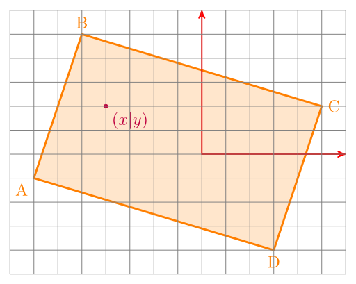
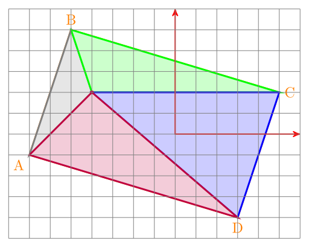
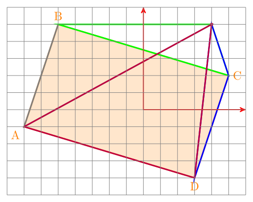

{kind=link}

I've just found this interesting question on StackExchange:
If you have a rectangle ABCD and point P. Is P inside ABCD?
The idea
The idea how to solve this problem is simply beautiful.
If the point is in the rectangle, it divides it into four triangles:
{kind=link}

If P is not inside of ABCD, you end up with something like this:
{kind=link}

You might note that the area of the four triangles in is bigger than the area of the rectangle. So if the area is bigger, you know that the point is outside of the rectangle.
Formulae
If you know the coordinates of the points, you can calculate the area of the rectangle like this:
\(A_\text{rectangle} = \frac{1}{2} \left| (y_{A}-y_{C})\cdot(x_{D}-x_{B}) + (y_{B}-y_{D})\cdot(x_{A}-x_{C})\right|\)
The area of a triangle is: \(A_\text{triangle} = \frac{1}{2} (x_1(y_2-y_3) + x_2(y_3-y_1) + x_3(y_1-y_2))\)
Python
from typing import Tuple
from dataclasses import dataclass
@dataclass
class Point:
x: float
y: float
Rectangle = Tuple[Point, Point, Point, Point]
def is_p_in_rectangle(r: Rectangle, P: Point) -> bool:
area_rectangle = 0.5 * abs(
# y_A y_C x_D x_B
(r[0].y - r[2].y) * (r[3].x - r[1].x)
# y_B y_D x_A x_C
+ (r[1].y - r[3].y) * (r[0].x - r[2].x)
)
ABP = 0.5 * (
r[0].x * (r[1].y - r[2].y)
+ r[1].x * (r[2].y - r[0].y)
+ r[2].x * (r[0].y - r[1].y)
)
BCP = 0.5 * (
r[1].x * (r[2].y - r[3].y)
+ r[2].x * (r[3].y - r[1].y)
+ r[3].x * (r[1].y - r[2].y)
)
CDP = 0.5 * (
r[2].x * (r[3].y - r[0].y)
+ r[3].x * (r[0].y - r[2].y)
+ r[0].x * (r[2].y - r[3].y)
)
DAP = 0.5 * (
r[3].x * (r[0].y - r[1].y)
+ r[0].x * (r[1].y - r[3].y)
+ r[1].x * (r[3].y - r[0].y)
)
return area_rectangle == (ABP + BCP + CDP + DAP)
Triangle
The same idea can easily be adopted to triangles:
from dataclasses import dataclass
@dataclass
class Point:
x: float
y: float
class Triangle:
"""Represents a triangle in R^2."""
epsilon = 0.001
def __init__(self, a: Point, b: Point, c: Point):
self.a = a
self.b = b
self.c = c
def get_area(self) -> float:
"""Get area of this triangle.
>>> Triangle(Point(0.,0.), Point(10.,0.), Point(10.,10.)).get_area()
50.0
>>> Triangle(Point(-10.,0.), Point(10.,0.), Point(10.,10.)).get_area()
100.0
"""
a, b, c = self.a, self.b, self.c
return abs(a.x * (b.y - c.y) + b.x * (c.y - a.y) + c.x * (a.y - b.y)) / 2
def is_inside(self, p: Point) -> bool:
"""Check if p is inside this triangle."""
current_area = self.get_area()
pab = Triangle(p, self.a, self.b)
pac = Triangle(p, self.a, self.c)
pbc = Triangle(p, self.b, self.c)
new_area = pab.get_area() + pac.get_area() + pbc.get_area()
return abs(current_area - new_area) < Triangle.epsilon
if __name__ == "__main__":
import doctest
doctest.testmod()
Credits
Thank you Teon Brooks for reporting an error (I wrote "rectangles" instead of "triangles")